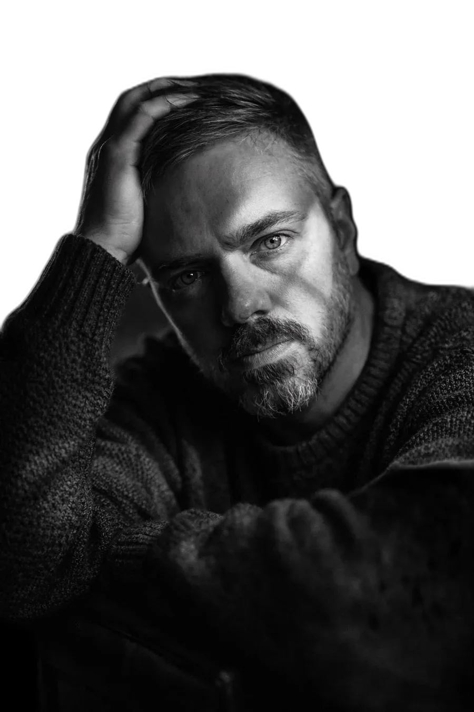
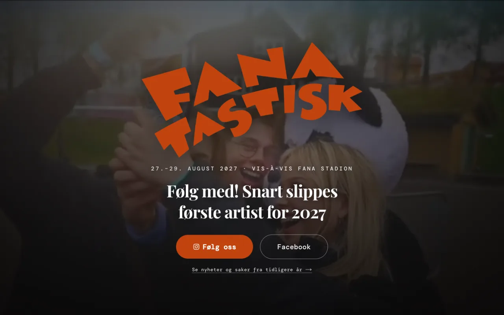

Byggetforhånd.

Christian Hermansen
Bergen
Nettsider, apper og verktøy for folk som får ting til å skje.
For arrangører, lag, foreninger og små bedrifter. Tegnet for deg, og bygget for hånd i Bergen.
Utvalgt arbeid
01 / 04

Fanatastisk
Musikkfestivalen i Fana fikk nettside og app, bygget på det samme innholdet. Festivalen redigerer alt selv.
Fana, BergenNettside + appLiveApp Store
Åpne siden